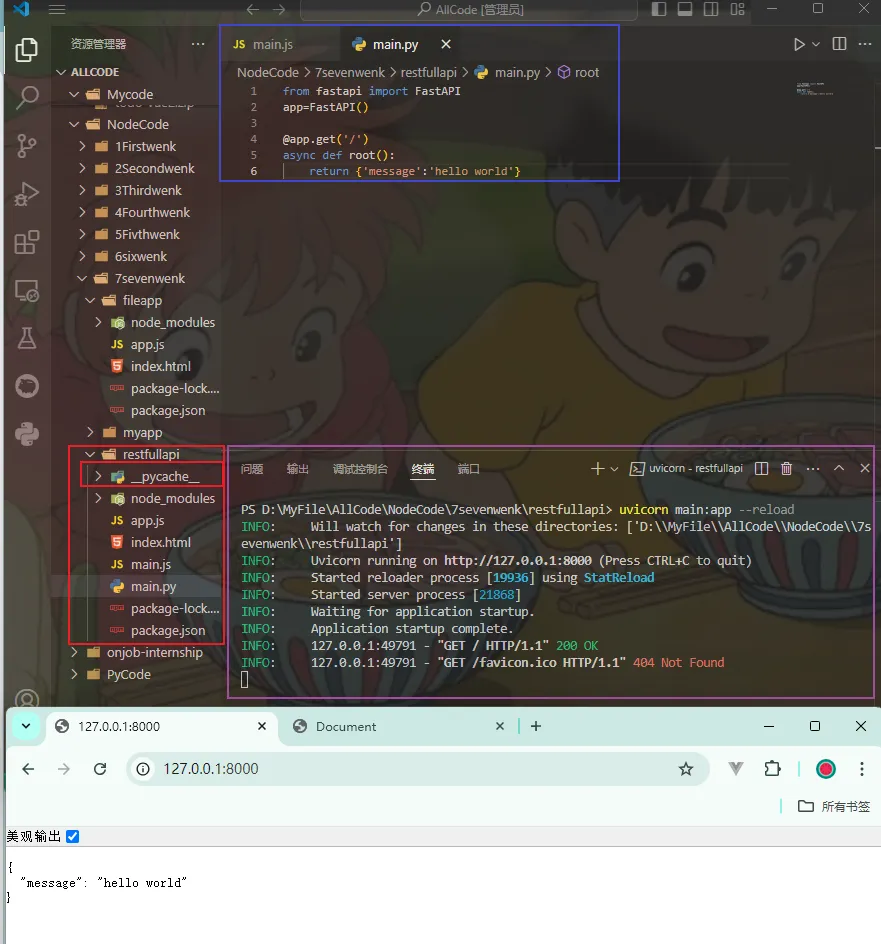

FastAPI¶
安装¶
- 安装：
pip install fastapi - 阿里云镜像安装：
pip install fastapi -i https://mirrors.aliyun.com/pypi/simple - fastapi 启动依赖 uvicorn，安装 uvicorn：
pip install uvicorn -i https://mirrors.aliyun.com/pypi/simple - 验证安装是否成功
- 在安装 fastapi 的文件下新建main.py文件 
- 终端
uvicorn main:app --reload命令开启 uvicorn 服务
重启命令之后的终端内容：
PS D:\restfullapi> uvicorn main:app --reload
INFO: Will watch for changes in these directories: ['D:\\MyFile\\AllCode\\NodeCode\\7sevenwenk\\restfullapi']
INFO: Uvicorn running on http://127.0.0.1:8000 (Press CTRL+C to quit)
INFO: Started reloader process [19936] using StatReload
INFO: Started server process [21868]
INFO: Started server process [21868]
INFO: Waiting for application startup.
INFO: Application startup complete.
INFO: 127.0.0.1:49791 - "GET / HTTP/1.1" 200 OK
INFO: 127.0.0.1:49791 - "GET /favicon.ico HTTP/1.1" 404 Not Found
终端命令运行之后，文件夹生成__pycache__，浏览器访问 127.0.0.1:8000，显示内容信息。
终端开启服务命令：
- main：及创建的文件 main.py
- app：FastAPI()=app，即是实例化对象
- --reload：代码改变重启服务器，只在开发阶段使用
1. FastAPI 程序结构
基础的 fastapi 程序需要五个步骤：
# step1:导入FastAPI
from fastapi import FastAPI
# step2:创建一个app实例
app=FastAPI()
# step3:编写一个路径操作装饰器
# get可以换成
# post/put/delete...
# 路径也可以换成其他的额路径，如
# /hello /index.html ...
@app.get('/')
# step4:编写一个路径操作函数
# 函数返回值也不是固定
async def root():
return {'message':'hello world'}
# step5:运行开发服务器（终端进行）
终端启动服务器运行的时候，也可以指定服务器地址和端口号：uvicorn main:app --host 127.0.0.1 --port 8001 --reload
路径操作装饰器中路径参数¶
- 声明路径参数
 路径当中输入的 iterm 会作为路径操作函数的参数的值，进而被显示到浏览器上。
路径当中输入的 iterm 会作为路径操作函数的参数的值，进而被显示到浏览器上。 - 声明路径参数的类型
当路径操作函数声明参数类型为 int 时：
当路径操作函数声明参数类型为 str 时：浏览器数据就会正常显示。
实际上，挡在路径操作函数里面定义了参数类型，当访问链接的时候的数据不正确时，fastapi 会进行是数据校验。
● 所有的数据验证都是由 Pydantic实现的.
● 你可以用同样的类型声明比如 str, float, bool 或者其他更复杂的类型.
- 限定路径参数有效值
from fastapi import FastAPI
from enum import Enum
app=FastAPI()
class my_class_name(str,Enum):
name='xiaohua',
age=18,
id='123456',
isStudent=True
@app.get('/my/{po}')
def root(po:my_class_name):
return {'status':po}
设定参数的类型是一个 class 对象，在访问的时候，只有当 po 是限定类型中的数据时才会进行正常显示。
- 路径参数的值是路径类型的变量 路径中的参数是路径，使用 Path 转换器进行转换。
查询参数¶
- 查询参数 当生命不属于路径参数的其他函数参数时，该参数将自动解释为“Query”参数，即查询参数。即为在 URL ？之后的key-value键值对，每对键值对使用&进行分割。 http://127.0.0.1:8000/iterms/?skip=0&limit=10：查询参数有两个，一个是 skip，一个是 limit，因为它们都是 URL 的一部分，它们本质上都是字符串。
当在浏览器输入 http://127.0.0.1:8000/files/?num1=10&num2=20进行访问，都会将两数之和给返回到浏览器页面。 当浏览器访问不带上查询参数时，那么就是默认值的情况，http://127.0.0.1:8000/files/
因为 query 参数类不是 path 中固定的一部分，故而它们是可选的，且可以有默认值。 2. 设置可选的查询参数 声明可选的 query 参数，将查询参数的 默认值设置为None。
请求体¶
- 请求体 request body，API 几乎总是必须发送一个响应体，但是客户端并不需要，请求体定义，使用Pydantic 模型。 其中： ● 不能通过 GET 请求发送请求体 ● 发送请求体数据，必须使用：POSST/UT/DELETE/PATCH
- 实现请求体 ● 从 Pydantic中导入BaseModel：from pydantic import BaseModeel ● 创建请求体数据模型：声明请求体数据模型为一个类，且类继承 BaseModel。所有的属性都用标准 python 类。同查询参数，当数据类型的属性不是必须的话，可有一个默认值或是可选的 None，否则该属性就是必须的。
声明一个json对象：¶
访问链接时传入的请求体可以为：¶
也可以为：
● 将模型定义为参数 将定义的模型添加到路径操作含糊当中去。
创建一个类，该类继承自BaseModel类¶
class Iterm(BaseModel):
name:str
description:str=None
price:float
tax:float=None
@app.post('/iterms/')
async def creste_iterm(iterm:Iterm):
return iterm
声明的参数是自己创建的模型 Iterm，使用 postman 访问链接并发送请求体过去，将内容进行输出。
给查询参数设置验证条件，用于字符串的验证¶
- 给查询参数添加验证
将num设置为查询参数，且 是设置为None，表示该参数可选¶
@app.get('/iterms')
def read(num:str=None):
ret={"iterm":"happy day"}
# 当数据存在，就向字典中添加键值对 "num":num
if num:
ret.update({"num":num})
return ret
添加验证：即便该参数可选，设置该数值的长度不能超过 50 个字符。此为设置条件。 ● 导入 query：from fastapi import Query ● 使用 query 在路径操作函数的参数位置设置 max_length 验证
● 当然，也可以给查询参数声明一些额外的验证和元数据，验证参数：alias、title、description。给路径参数添加验证（数值验证 ）¶
- 给路径参数添加验证 ● 导入路径模块：from fastapi import Path/from fastapi import Query ● 使用 Path 声明元数据，声明 Query 中所有的 参数
● Path 参数是必须的，它是路径当中的一部分，需要使用....声明标志这是必需参数
from fastapi import FastAPI
from fastapi import Query
from fastapi import Path
app=FastAPI()
@app.get('/iterms/{iterm_id}')